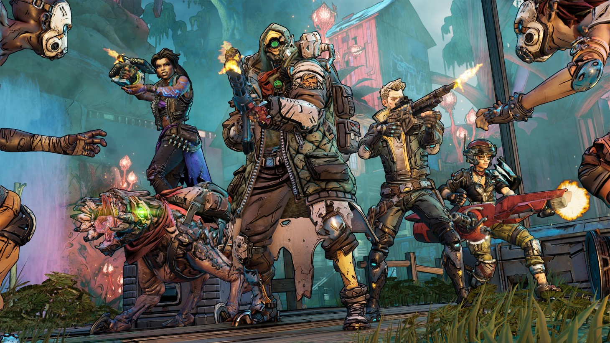

A seven-year-old heist game that still hasn’t been bested. As a squad of four – it’s best played online with friends – you and your fellow goons scout banks, jewelry stores, and art galleries, hatching a plan of action. You can go in all guns blazing, but usually, you’ll want a stealthier, more tactical approach: your first steps might be disabling cameras and tying the hands of anyone that might ruin your riches. Eventually, and inevitably, bullets will start flying. It won’t win awards for its weapon handling, but there’s a joy in the chaos that reigns whenever you open fire. You’ll have to bark orders at your squadmates to stop them getting tag-teamed by security guards and SWAT teams, and trying to grab bags of cash while spraying lead from behind cover is a thrill few other shooters can match.
Borderlands 3

(Image credit: Gearbox)
What is it? How to describe Borderlands 3… you could say it's the underlying principles of the first and second Borderlands wrapped up in a more pristine shell. Or you could call it World of Warcraft: The First-Person Shooter. With its heavy emphasis on loot, loot, and more loot, Borderlands 3 drowns players in a sea of guns with varying abilities and stats (including a gun that shoots saw blades, and one you can throw like a boomerang while it carries on firing, wounding anyone nearby), conveniently color-coded by rarity. The colorful cast of characters breaks away from the traditional "fighter, wizard, rogue" archetypes, and each hero is memorable in their own right.
Doom Eternal
(Image credit: Bethesda)
What is it? Doom is it. The pinnacle of FPS. Doom Eternal, the latest in the series, is everything that the genre is about, distilled into one, glorious, searing, defiant roar. It’s a force of will. An expression of creativity, speed of wits, and the ceaseless, yet thoughtful, discharge of really big, cool guns that make demons explode real good. No other game excels so completely in the arts of moment-to-moment, incendiary spectacle, and intricate, cat-and-mouse, environmental awareness. Its guns aren't just new ways of killing. Each is a multi-pronged key fitting a different situational lock, affixed to a different face of the whirling, ever-shifting Rubik’s Cube of Doom's none-more dynamic combat.
In many respects, it somehow manages to improve on 2016’s Doom, one of the titans of the genre and still worth playing in its own right. Ammo, health, and armor are in shorter supply, but you can pick them up from the writhing corpses of dead demons, provided you kill them in the right way (set a demon on fire with your “flame belch” and it will spew out armor when it draws its last, rasped breath). It doesn’t have 2016’s Doom SnapMap, a brilliant level design tool, but the multiplayer still harks back to the best of Quake’s lightning-fast arena brutality. If you need to give anyone a lesson in what FPS is all about, you will not find a better or more complete one than Doom Eternal.